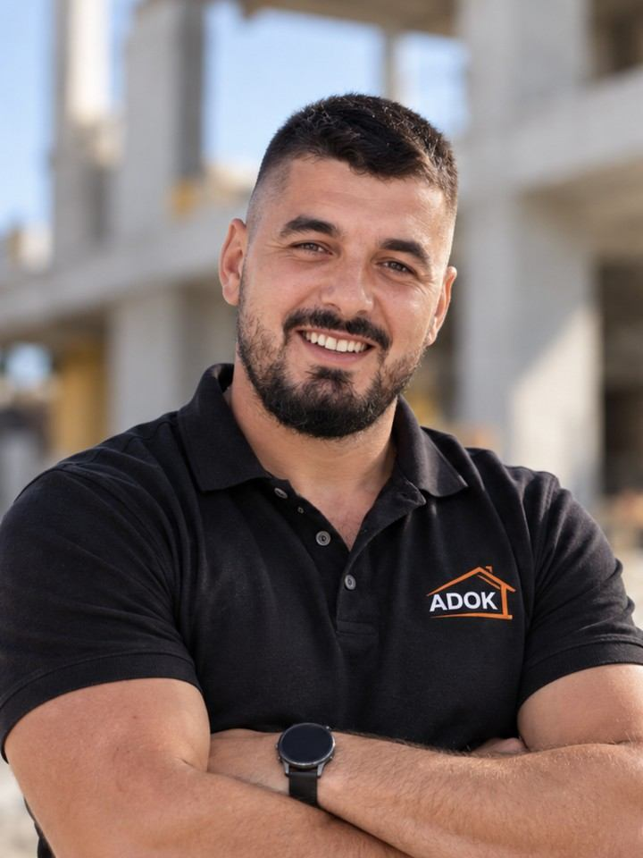

O nas
Domače gradbeno podjetje iz Maribora z osebnim pristopom do vsakega naročnika. ADOK deluje v Mariboru in po Podravju – Ruše, Miklavž, Hoče, Rače, Pesnica, Lenart.
Gradbeništvo iz Maribora
ADOK, gradbeništvo, d.o.o. je gradbeno podjetje s sedežem na Sokolski ulici 46 v Mariboru. Vodi ga lastnik in direktor Adnan Kolčaković. Ukvarjamo se z gradnjo stanovanjskih in nestanovanjskih stavb, adaptacijami ter specializiranimi gradbenimi deli.
Smo manjša, prilagodljiva ekipa – zato ima vsak naročnik pravega sogovornika. Delamo osebno in pregledno: vodimo vas skozi projekt, se držimo dogovorov in za seboj pustimo urejeno gradbišče.
V Mariboru in okolici izvajamo novogradnje, prenove in adaptacije, fasade, strehe, suhomontažo, polaganje ploščic, kamnite obloge, škarpe in podporne zidove ter zemeljska dela in temelje – celovito ali po posameznih fazah.

Kako delamo
Z naročnikom se dogovarja izvajalec, ki dela tudi vodi.
Od izkopa do zaključne obdelave – manj usklajevanja.
Jasna ponudba, dogovorjeni roki in urejeno gradbišče.